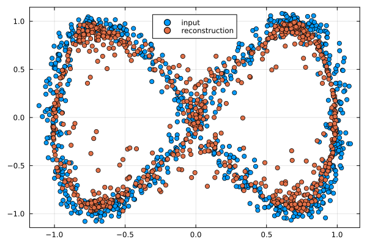
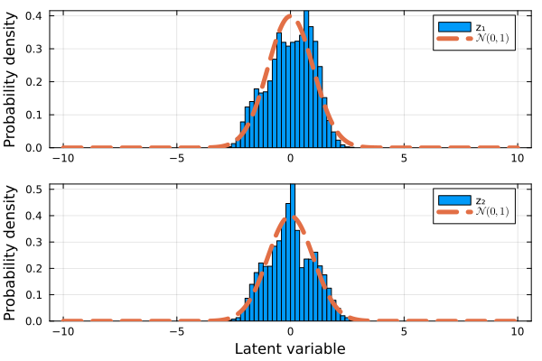
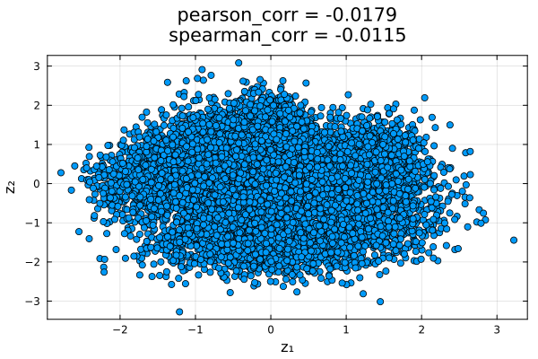

Generative Adversarial Networks
To demonstrate how to use this module, we will train a Wasserstein Generative Adversarial Network (WGAN) [9, 10], using a Variational Autoencoder (VAE) as the generative model (VAE) [1, 11], to generate synthetic data that mirrors a two-dimensional target distribution. The VAE must learn to mimic this distribution using only the provided training samples, without direct access to the true underlying distribution or the ability to sample additional data.
For this example we will need to load the following modules
using Lux
using GenerativeModelProtocolslet us consider the following function to generate our random two-dimensional data
function make_data(num_samples)
t = (2.0*π) .* rand(Float64,num_samples)
x_noise = 0.05 .* randn(Float64,num_samples)
y_noise = 0.05 .* randn(Float64,num_samples)
x = cos.(1.0.*t) .+ x_noise
y = sin.(2.0.*t) .+ y_noise
return x, y
end
num_samples = 5000
x_train, y_train = make_data(num_samples)
train_data = collect(transpose(hcat(x_train,y_train)))we then define the WGAN-VAE that is to be trained on this data, whose latent variables are also two-dimensional as
model = GenerativeModelProtocols.GenerativeAdversarialNetwork(2, 2)however, unlike our VAE implementation that uses only one optimiser, we want to specify (in general) different optimiser settings for the cost function of the critic and the generator models, which we do as
critic_optimiser = Adam(; eta = 1.0E-4, beta = (0.0,0.9))
vae_optimiser = Adam(; eta = 1.0E-4, beta = (0.95,0.999))thus, our trainable generative model protocol is defined, and trained, as
protocol = GenerativeModelProtocol(model,train_data;
batchsize = 256,
epochs = 1500,
optimiser = (critic_optimiser, vae_optimiser),
device = cpu_device()
)
train!(protocol; β = 0.2, γ_vae = 1.0, γ_wgan = 0.1,
grad_penalty = true, λ = 10.0, a = 1.0
)finally, we can generate synthetic data by simply invoking our trained protocol
synthetic_data = protocol(num_samples)
Displaying models and protocols
As part of this module, Base.display is overloaded with most relevant structures that users can need. We can easily read the configuration of protocol from the REPL by inputting
julia> protocol
GenerativeModelProtocol{GenerativeModelProtocols.GenerativeAdversarialNetwork, Adam{Float64, Tuple{Float64, Float64}, Float64}}:
training_data = 2×5000 Matrix{Float64}
epochs = 1500
batchsize = 256
shuffle = true
optimiser = (Adam(eta=0.0001, beta=(0.0, 0.9), epsilon=1.0e-8), Adam(eta=0.0001, beta=(0.95, 0.999), epsilon=1.0e-8))
device = CPUDevice
model = GenerativeModelProtocols.GenerativeAdversarialNetworklikewise, we can also read the configuration of model from the REPL by inputting
julia> model
GenerativeModelProtocols.GenerativeAdversarialNetwork:
discriminator:
Chain(
Dense(2 => 32, leakyrelu)
Dense(32 => 32, leakyrelu)
Dense(32 => 32, leakyrelu)
Dense(32 => 32, leakyrelu)
Dense(32 => 32, leakyrelu)
Dense(32 => 1)
)
encoders:
Chain(
Dense(2 => 32, leakyrelu)
Dense(32 => 32, leakyrelu)
Dense(32 => 32, leakyrelu)
Dense(32 => 32, leakyrelu)
Dense(32 => 32, leakyrelu)
Dense(32 => 4)
)
decoders:
Chain(
Dense(2 => 32, leakyrelu)
Dense(32 => 32, leakyrelu)
Dense(32 => 32, leakyrelu)
Dense(32 => 32, leakyrelu)
Dense(32 => 32, leakyrelu)
Dense(32 => 2)
)Model validation
So far, we have only validated our model by verifying that its synthetic data resembles the training data. However, we can perform at least two additional tests to assess whether the model is functioning as intended:
- Test Data Reconstruction: Encode and decode a separate, unseen test dataset to see if the reconstructed data closely resembles the original.
- Latent Space Validation: Verify that all latent variables in our trained VAE act as statistically independent random variables following a standard normal distribution (zero mean and unit variance).
For our given example, we can easily test the ability of our trained model to reconstruct some inputted data by simply calling GenerativeModelProtocols.encode and GenerativeModelProtocols.decode as follows
x_test, y_test = make_data(800)
test_data = collect(transpose(hcat(x_test,y_test)))
z_test_data = GenerativeModelProtocols.encode(model,test_data)
recon_test_data = GenerativeModelProtocols.decode(model,z_test_data)
To test if the latent variables of our trained model follow a normal distribution with zero mean and unit variance we solely need to use the model's encoder, however, unlike our previous reconstruction example it is preferable to use a larger test dataset
x_test, y_test = make_data(10000)
test_data = collect(transpose(hcat(x_test,y_test)))
z_test_data = GenerativeModelProtocols.encode(model,test_data)
while the results from this distribution are noticeably better than those we obtain with a plain VAE, that is, without any adversarial network framework, we still observe noticeble artifacting in the synthetic data distribution compared to the real data distribution.
To evaluate whether the latent variables of our trained VAE behave as independent random variables by calculating the Pearson correlation coefficient or, more robustly, the Spearman rank correlation coefficient.
using StatsBase
pearson_corr = cor(z_test_data[1,:],z_test_data[2,:])
spearman_corr = corspearman(z_test_data[1,:],z_test_data[2,:])
the resulting correlations, visible in the illustration above, are close enough to zero to confirm that the latent variables are effectively independent.
Source code
The scripts used to create and train the VAE, and to produce all the plots shown in this page are included in the examples folder of this module.
cd /path/to/GenerativeModelProtocols.jl/examples/intro_example/gan_example
julia intro_example.jl